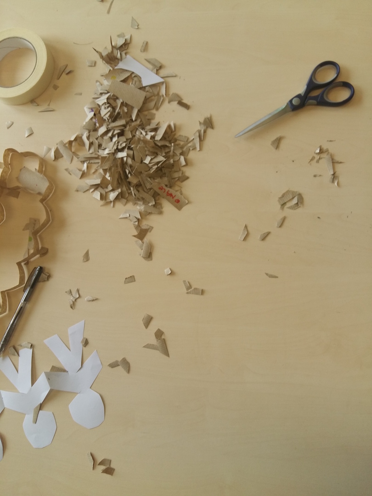
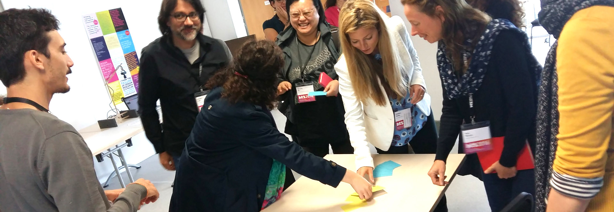
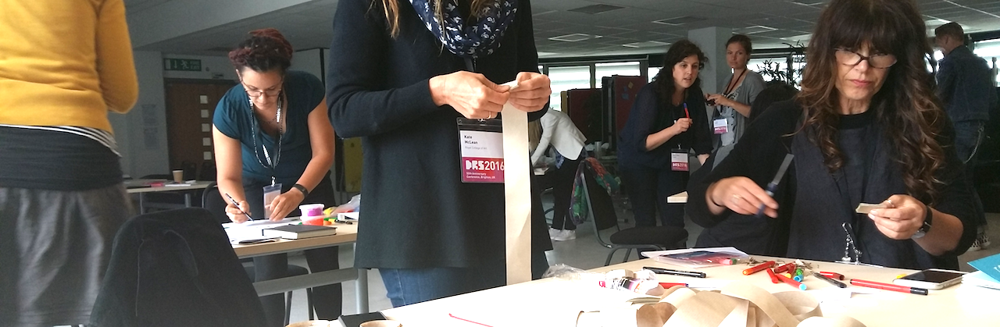
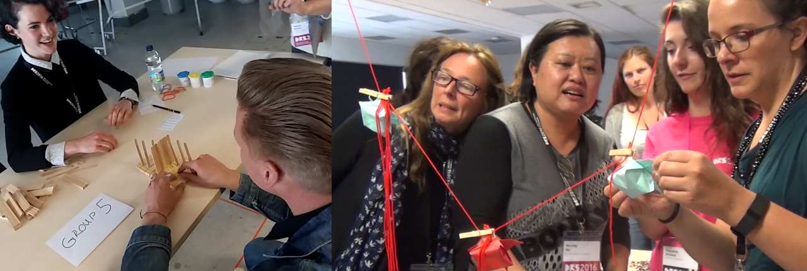

Considering Physical Variables for Data Physicalization
Workshop at Design Research Society 2018
Wednesday 27th June 11am-4pm
CALL FOR PARTICIPATION
| The use of physical representations to facilitate communication, analysis, teaching, and research is as old as humanity (the Sumerians used clay tokens to represent data more than 7000 years ago). However, it is only in the past decade that Data Physicalization is being discussed as a dedicated form of research and design practice primarily concerned with the design of physical artefacts “whose geometry or material properties encode data” to facilitate sense-making and communication. While for visualization, as the dominant form of data representation, and, to a lesser extent, sonification, principles and taxonomies exist to guide designers, the equivalent design vocabulary has yet to be established for Data Physicalization. The aim of this workshop is to draw together practitioners and researchers from various design disciplines in order to explore a potential physical design language for Data Physicalization. Through a series of hands-on data physicalization activities, workshop participants will get a first-hand experience thinking through data in a physical way while actively exploring and discussing their process of mapping data to physical artefacts along a given framework spanned by physical properties and interaction mechanisms. |  |
PLANNED ACTIVITIES
This full-day workshop will consist of three parts:
1 - Introductory Talks.
We will provide a brief overview of the state-of-the-art and key concepts of physicalization, including current frameworks and theory for design of Data Physicalization. Following this, each participant will introduce themselves and their interest in the topic in a Pecha Kucha-like format . We will then introduce the physicalization design activities planned in the following session, allowing participants to think about possible designs over the coffee break.

2 - Designing Physicalizations.
Participants will work in small groups to design and build a physicalization based on a given set of data, a usage scenario, and materials. As part of this, participants will explore and experience the interplay between the data semantics, metaphor, analogue materials (e.g., paper/cardboard, plasticine, LEGO), and design goals, i.e., and the intended usage scenario for the physicalization. The outcome of this part of the workshop will be a number of different physicalization designs created by participants that they will present to each other.

3 - Reflection & Discussion.
In a participant-driven discussion, we will reflect participants’ physicalization process. The discussion will be structured into questions of data encoding and how this is enabled by particular materials, how the physical properties of the physicalizations promote interaction, data exploration and reflection, and how a formalized design vocabulary, in order to facilitate design practice and teaching, could look like.

REGISTRATION
While participation in this workshop is open to any delegate who has registered for the DRS’18 conference, we have a limit of 20 available. To reserve a place on the workshop please email trevor.hogan@cit.ie no later than Monday 18th June 2018. When booking a place please include the following information in the email:
- Name
- Affiliation
- A short bio (approx. 100 words)
- Motivation statement (i.e. reason for attending the workshop - approx. 100 words)
WORKSHOP TIMELINE
June 18, 2018 Booking Deadline
June 25, 2018 Workshop
For any enquiries please email: trevor.hogan@cit.ie
ORGANISERS
Cork Institute of Technology (@tactiledata)
Trevor Hogan is a lecturer at the Cork Institute of Technology, Ireland, in the Human-data Interaction group. He received his PhD from the Bauhaus-Universitt Weimar, Germany. The aim of his research is to describe and better understand how embodiment influences and augments an audiences experience of data representation. His research has been presented and published at academic conferences and periodicals in fields such as HCI, Visualization, and Design. His work is strongly interdisciplinary and may be situated in the field of Design, but at the intersection of tangible computing, HCI, interactive design, information visualization, and psychology.
University of St Andrews (@uta_ente)
Uta Hinrichs is a Lecturer at the School of Computer Science at the University of St Andrews, Scotland, specializing in visualization and HCI. She received her PhD in Computer Science with specialization in Computational Media Design from the University of Calgary, Canada. Heavily drawing form fields outside of Computer Science (e.g., Design, Literary Studies, and Information Sciences), Uta’s research is driven by the question of how to facilitate insightful, pleasurable and critical interactions with information in physical and digital spaces. Her research has been presented and published at academic venues spanning the fields of Visualization, HCI, Literary Studies, and Digital Humanities.
University of Edinburgh (@bettinanissen)
Bettina Nissen is a Research Associate in Design Informatics at the University of Edinburgh with a PhD from Newcastle University. Bettina has a background in digital fabrication, product and interaction design, and her design research focuses on engaging audiences with data and technology through participatory, tangible makings.
 Samuel Huron,
Samuel Huron,Mines-Télécom ParisTech (@cybunk)
Samuel Huron is an associate Professor in Design and ICT at Telecom Paris-Tech. His research focuses on creating and studying new tools to democratize dynamic information visualization authoring and by studying design methods apply to research. For his work on “Constructive Visualization” he received the 2015 best doctoral dissertation award from IEEE VGTC Pioneer Group. Before, he was the lead designer of the Institute of Research and Innovation of the Pompidou Center. Samual co-organized previous workshop on data physicalization at ACM DIS 2017 and DRS 2016. He has written about pedagogy, visual representation construction, and using sketching for visualization.